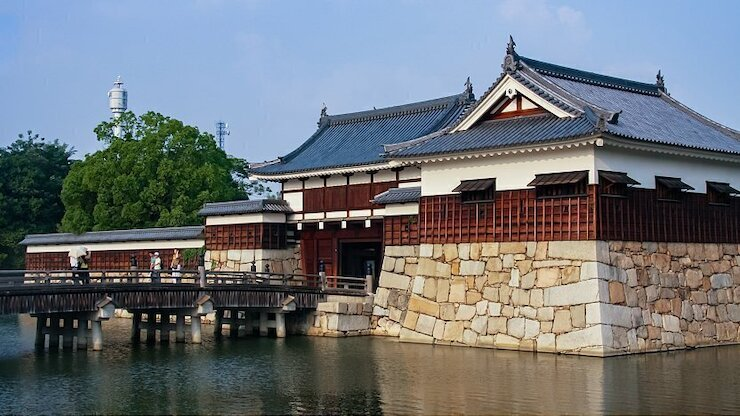
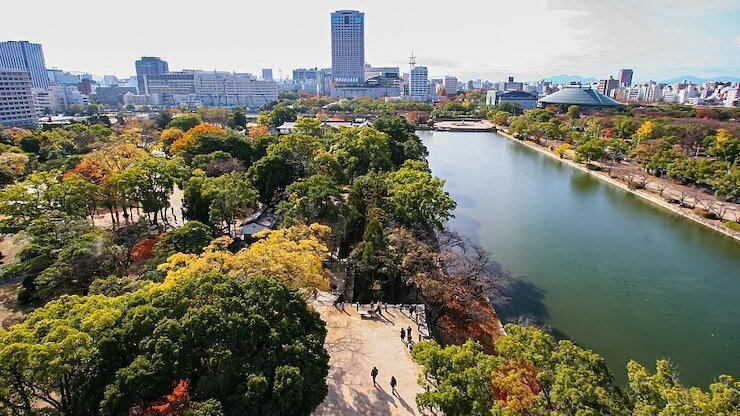

Hiroshima Castle
広島城
Hiroshima Castle (広島城, Hiroshimajō), also called the Carp Castle, is a good example of a castle built on a plain in the center of a city as opposed to hilltop and mountaintop castles. Its main keep is five stories tall, and its grounds are surrounded by a moat. Also within the castle's precincts are a shrine, some ruins and a few reconstructed buildings of the Ninomaru (second circle of defense).
Hiroshima developed as a castle town, whereby the castle was both the physical and economical center of the city. Built in 1589 by the powerful feudal lord Mori Terumoto, Hiroshima Castle was an important seat of power in western Japan. While it was spared the demolishment that many other castles met during the Meiji Period, like the rest of the city, Hiroshima Castle was destroyed by the atomic bomb in 1945.
Thirteen years later, its main keep was rebuilt in ferro-concrete with an attractive, partially wooden exterior. Inside the keep is an informative museum on Hiroshima's and the castle's history and Japanese castles in general, while panoramic views of the surrounding city can be enjoyed from the top floor.
In more recent restoration efforts, some structures of the Ninomaru, the castle's second circle of defense, were reconstructed using original building methods and materials. They include the castle's main gate and two turrets adjoined by a long storehouse. Visitors can enter the buildings and view exhibits about their reconstruction.
